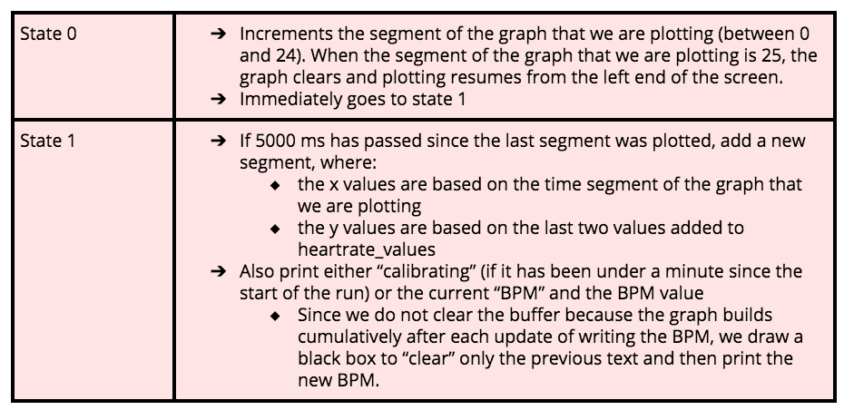
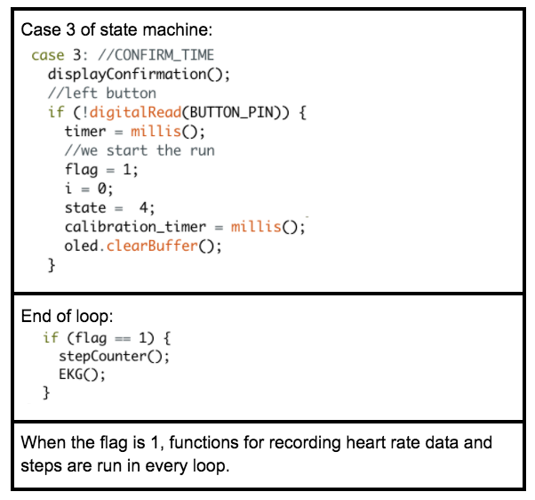

Beats
Beats is a running pal that aids in understanding the efficiency and intensity of your running. View your real-time BPM, step count, and steps per minute during your run! After you’re done, head over to our website to see analytics and visualizations, including graphs of your BPM and steps across your workout.
Overall Design
Design Decisions and Rationale
The user is able to access their fitness data during their run, which is done by displaying the information/graphs on the OLED.
Since the heart rate and pace/distance are both important pieces of information, we decided to show the user both of these by toggling between two screens. One displays total steps and steps/min, the other displays current heart rate and a graph of the user’s BPM over the last 2 minutes so they can see the trend.
Once we collected the signal from the pulse sensor and calculated the BPM, we had to decide what exactly to plot. Initially we had envisioned a typical EKG graph plotting each pulse. Then we realised that someone using the device while running would not be able to glean much from that kind of graph. It would be better to see it in terms of BPM, and the trend in BPM over the past few minutes.
Once a runner finishes their run, it’s extremely useful to look at the consolidated steps/min and heart rate data across the entire run to identify trends. This is done by sending the data to the server at the end of each run and displaying heart rate by time and steps/min by time graphs for the user to see on the server. This seems pretty useful to visualise information from the run and compare different points in the run.
Challenges
One of the biggest challenges with the finger rate sensor was positioning it in a consistent location with each sampling. In order to overcome this challenge, we had to utilize velcro to place the sensor on the center of the user’s finger. Consistency was particularly important during the run, as if the position of the sensor on the user’s finger changed while they were running, then the average of the readings would also be impacted and therefore change the threshold at which the signal must be in order to be detected as a pulse.
Another big challenge with the finger rate sensor was filtering out noise. Since the sensor detects light, exposure to external light would cause the signal to be higher. Therefore, we created a cloth covering that we attached to the velcro that kept the sensor in place. This ensured that little light reached the pulse sensor, therefore preventing added noise.
The pin for the EKG broke off from the wire during one of the initial weeks of working on the project. This made it difficult to insert it into the breadboard since the wire tip was frayed. We soldered the end of the wire back to fix this.
In order to detect pulses, we needed to find a threshold at which, if the signal was higher than this given threshold, we would indicate that we had detected a pulse. It was difficult to find this threshold as the sensitivity of the sensor meant that the raw readings varied in magnitude. We tested out a few different values for the threshold and decided on 1.3*average.
In order to deal with the variance in magnitude of the readings, we decided to use an averaging filter over the last minute of data.
Averaging filter for raw data:
We had to figure out how long to collect an average over past data. Since it took a while to get an accurate threshold, we needed to test different time periods and found that after about the first minute, the readings evened out.
Hence our average, and hence the threshold we calculate, would be adjusted if the user’s heart rate went up while running so we could measure the correct number of pulses.
Calculate BPM:
This could be done by counting the number of pulses recorded in a minute, but we wanted to update faster. First we just multiplied the pulses counted in 10 seconds by 6.
We wanted a more accurate reading and quick update so we used an averaging filter. We store number of pulses detected in 5 second intervals for last 6 “5 second intervals”.
Then we add the six together and multiply by 2 (30*2 = 60) to get BPM. This updates the value every 5 seconds but it also averages it across the past 30 seconds so faulty readings won’t throw the BPM measurement off too much.
One challenge we had with displaying the graph on the OLED is how often we could plot points onto the OLED. Originally, we wanted to continuously plot points onto the OLED. However, we soon realized that while we were plotting pixels, heart rate data was not being collected. Therefore, we had to prioritize collecting heart rate data over plotting it, and reduced the plotting rate to once every five seconds.
Setting the correct threshold so we don’t overcount or undercount steps. Decided on y > 1.2
A challenge we came across when posting from the ESP32 to display the the steps and heart rate data on was putting graphs on the website. Originally, we were going to use MatPlotLib in to generate an image and store it, and then post the saved image on the website. However, we found out that by using Bokeh Plotting the graph will display with a get request.
A challenge from integrating the step counter was keeping it running in the background while the user changed between viewing steps and viewing the EKG. In order to accomplish this, a flag variable was created, and was set to 1 if a run was ongoing. At the end of every loop, the flag variable was checked, and the step counter function was run if the flag was at 1.
When testing the speech to text function in the final state machine, we decided to add a state where the user is able to confirm if the right time was processed.
Parts List
Pulse Sensor (pulsesensor.com)
Senses pulse through green-light LED.
System Design
Block Diagram
State Machine Diagram

Energy Management
Documentation
How do I use Beats?
- Before starting a run, press either button to begin.
- Hold down button to activate the microphone. Say how long you want to run for.
- There will be a confirmation screen asking if the time is correct. Press the left button to confirm or the right button to return to repeat the time.
- After confirming the time the run will start. Begin your run
- Click the left button to toggle between the step counter display and the heart rate display.
- At the end of the run (the timing period), the data will be sent to a database, so you can visit the corresponding website to see their steps and heart rate graphed.
What if I want to make my own Beats?
One of the major parts in our system is the pulse sensor from pulsesensor.com, which detects pulses from the user’s finger through a green light LED. We connected the sensor to the breadboard through three wires: the red wire connects to Power, the black wire connects to Ground, the Purple Wire connects to A7 (I035 on the breadboard).
Other major components of the breadboard are the IMU, ESP32, and the microphone, all of which we wired into the board in class.
We didn’t use any libraries while working with the pulse sensor.
We used the U8g2lib.h library for the Oled screen, the mpu9255_esp32.h library for the IMU, and connected with the Google API for the microphone.
int speech_to_text()
This function is called when a button is pressed and it immediately turns on the microphone and starts recording data. It then posts the data to the Google speech API which then returns the text of when was said. The code then calls getSeconds() which returns a time in milliseconds if a valid time was received from the google API, otherwise it returns 0.
void stepCounter()
This function records steps in a global array, and a movement is deemed a “step” when the filtered IMU reading for the y-axis is greater than 1.2.
void EKG()
This function detects peaks in the signal from the pulse sensor and then records BPMs in a global array, heartrate_values.
Read a value from analog pin A7 100 times every second
Apply an averaging filter of the last 5000 data points (last 50 seconds of data)
update the stored values of the last 500 data points by shifting them down to add the most recent data point with the scaled value from A7
Calculate the average of the last 5000 data points
Detect a pulse if two conditions met
Has it been 300 ms since the last peak was detected?
Is the scaled value from A7 greater than the calculated threshold, average*1.3?
Calculating BPM
Store number of pulses detected in 5 second intervals for last 6 “5 second intervals” (essentially 30 seconds of data)
Sum the number of pulses collected in last 6 “5 second intervals” and multiply by 2
Store BPM in array heartrate_values, and store a pointer, heartrate_index, to keep track of the location of the last index in heartrate_values that was updated
void graphEKG()
This function graphs up to the last 25 BPMs (125 seconds of past BPM data) collected, plotting a datapoint every 5 seconds as it is collected.
Since we want the graph to be plotting continuously and not jumping every 5 seconds when a reading is collected, we divide each line from a past BPM to current BPM collected into segments that we incrementally draw on the OLED while the next BPM value is being collected.
A state machine was used in order to separate different values being plotted.
Integration of Collecting Data: Setting a flag
Python Posting
We saved the data we posted in a SQL database. We saved the list of the steps data and heart rate data as a string with brackets and commas to break up the data points.
In the database we saved the run ID, time at which the run ended, the heart rate data and the steps data.
Python Graphing
With a GET request, we got data from the SQL database of the most recent run.
Since both BPM and steps per minute data are collected and added to their respective arrays every 5 seconds, we calculated the x axis time values by multiplying the array pointer index by 5.
To plot the data we collect at the end of the run, we used the bokeh plotting library to create line graphs of heart rate (BPM) and steps/second by time. We used html to put the graph on the server.
Tokenize and parse are helper functions that convert the string from the database to an array.